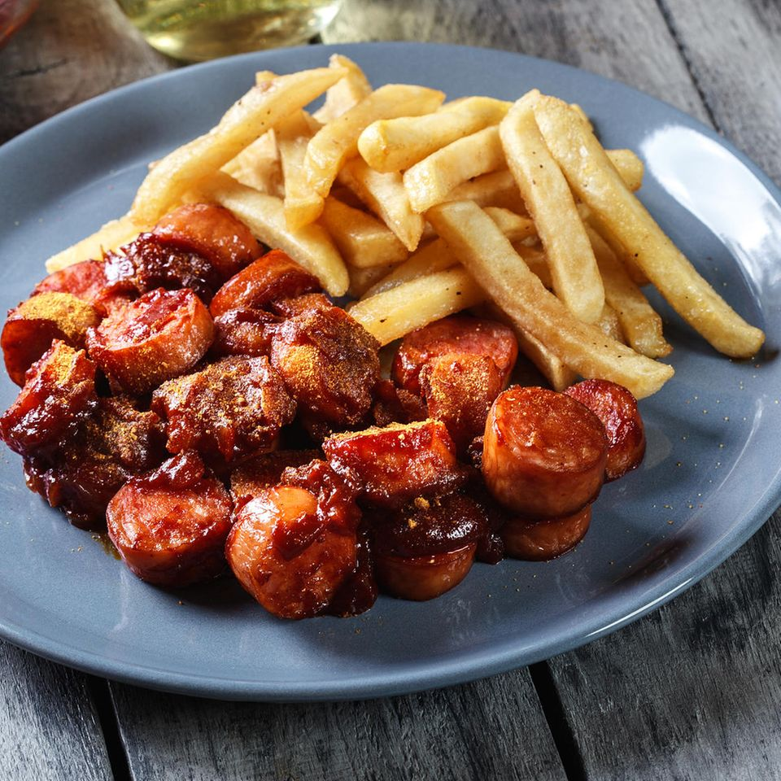

Currywurst

Description
A sliced bratwurst in sauce with curry powder, served with fries.
Ingredients
- Bratwursts
- 1 cup ketchup
- 5 tsp. curry powder
- (Optional) 1-2 teaspoons of other powders (paprika, pepper, onion)
- 2 tsp. Worchestershire sauce
- 4 tbsp. beef broth
Steps
- Pour ketchup on a saucepan on medium heat.
- Add the powders, then liquids, and stir well before simmering for 5-10 minutes.
- Pan fry the bratwurst, then cut and add sauce on it.
Home